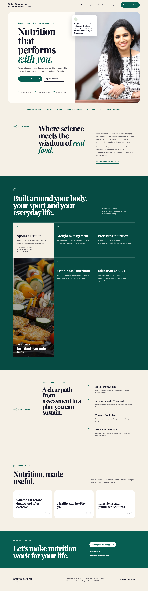
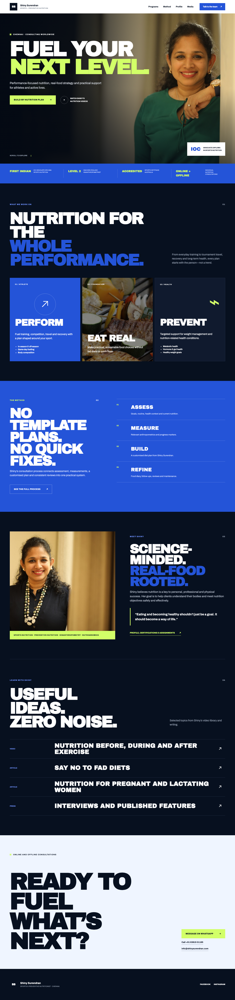
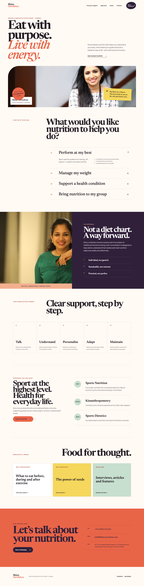

Concept 01Editorial trust
Premium, calm and credential-led, with Shiny’s professional authority at the centre.
Client review · Comparison round 02
These three responsive homepage concepts use the same verified Shiny Surendran content snapshot. They compare visual hierarchy and user journey; they are not yet complete replacements for every page on the existing website.

Concept 01Premium, calm and credential-led, with Shiny’s professional authority at the centre.

Concept 02Bold, athletic and high-contrast, with sports performance as the clearest entry point.

Concept 03Warm, human and goal-led, helping visitors recognise the right support quickly.
| Dimension | Concept 01 | Concept 02 | Concept 03 |
|---|---|---|---|
| Hierarchy | Identity → credentials → expertise → process | Performance promise → programs → method → profile | Identity → visitor goal → approach → journey |
| Visual tone | Premium, editorial, calm | Energetic, technical, athletic | Warm, optimistic, conversational |
| Best audience fit | Broad professional trust and referrals | Competitive and recreational athletes | Athletes plus preventive-nutrition clients |
| Strongest quality | Authority and maturity | Sports differentiation | Service discovery |
| Main tradeoff | Calmer energy | Narrower general-health appeal; mobile portrait crop needs revision | Less immediately premium |
| Content group | Current concepts | Selected-site requirement |
|---|---|---|
| Identity, positioning and key credentials | Included | Retain and add the complete approved qualification, assignment and honorary-position history. |
| Services and consultation process | Summarised | Add the complete condition catalogue, detailed service journeys and confirmed program information. |
| Testimonials and Google reviews | Deferred | Add only client-approved testimonials and review evidence. |
| Team | Blocked | Use client-supplied team names, roles, biographies and photographs. |
| Videos, articles, press and blog | Selected links | Create an organised internal content library instead of depending on the legacy site. |
| Contact | Call, email and prefilled WhatsApp | Add verified map directions, clinic information and persistent mobile contact actions. |
| Imagery | Approved portraits | Supply suitable sports, consultation, team and inclusive food imagery with mobile art direction. |
| Characteristic | Current concepts | Selected-site treatment |
|---|---|---|
| Clickable WhatsApp with prepared message | Included in all three | Retain as a primary enquiry path. |
| Clickable telephone and email | Included in all three | Retain. |
| Map and directions | Missing | Add after the clinic location is reconfirmed. |
| Sticky desktop contact controls | Missing | Add compact Call, WhatsApp, Email and Map actions. |
| Sticky mobile appointment action | Missing | Add without obscuring content or accessibility controls. |
| Production search/social metadata | Preview-level only | Add canonical, social preview and structured profile/local-service data before launch. |
Recommendation
Use Concept 01’s senior credibility as the foundation, add Concept 02’s sports-performance energy where relevant, and use Concept 03’s service-selection clarity. The selected revision should then receive the complete verified content and contact experience described above.
Please choose Concept 01, 02 or 03—or tell us the exact elements you would like combined.
{kind=link}
{kind=link}
{kind=link}